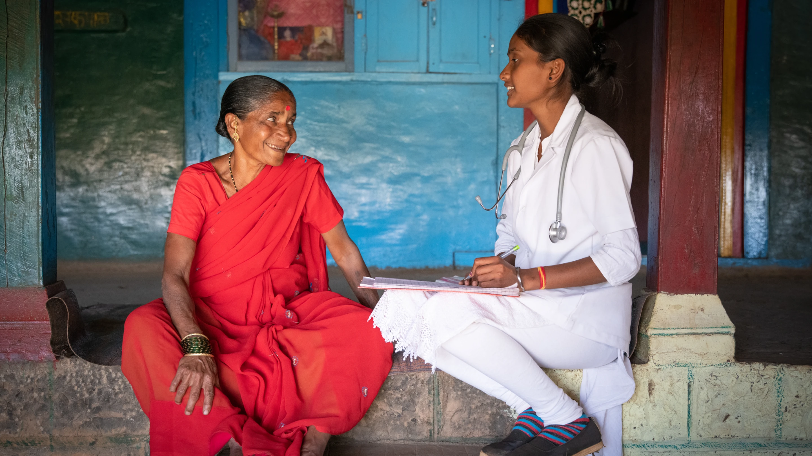
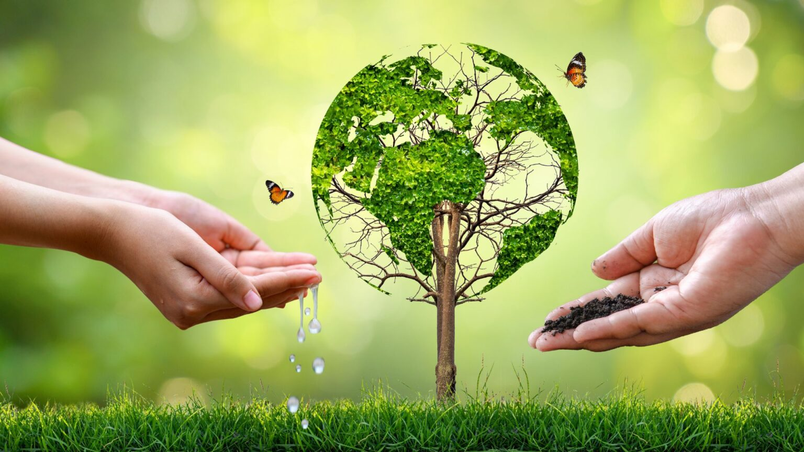
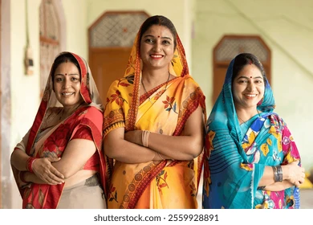

Changing Lives Through Education
Every child deserves access to quality education and a brighter future
Learn More
Healthcare for the Underserved
Providing essential medical services to communities in need
Our Programs


Women's Empowerment
Supporting women through skill development and economic opportunities
Support Us